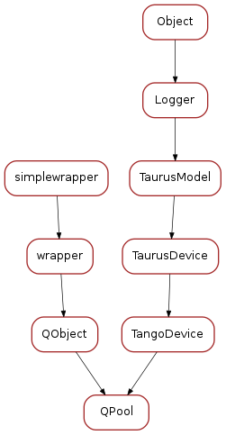

Taurus Extensions¶
Functions
Classes
-
registerExtensions()[source]¶ Registers the pool extensions in the
taurus.core.tango.TangoFactory
QPool¶

Functions
Classes
registerExtensions()[source]¶Registers the pool extensions in the taurus.core.tango.TangoFactory